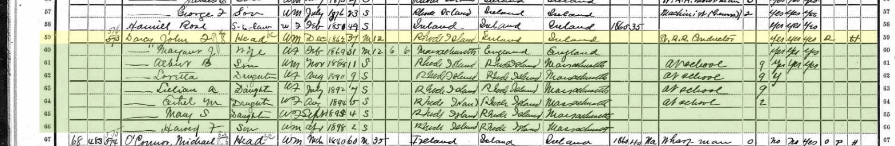

1900 U.S. census: the Darcy family, 62 Orchard Street, East Providence
1900 United States Federal Census, East Providence, Providence County, Rhode Island, sheet 24 (Ancestry collection 7602, record 69376596; NARA T623)

The original record, as it appears in the register or index.
What this document is
The United States census. A census taker went door to door and wrote down every person in each household, with age, birthplace and work.
What it says
Sheet 24, dwelling 652, family 574 (line numbers 59–66). John Darcy, head, born Dec 1862 in Rhode Island, 37, married 12 years; both parents born in Ireland; street railroad conductor; the owned/rented column reads R (rented). Ancestry’s index says “Own”; the image says rented. Margaret J., wife, born Feb 1869 in Massachusetts, 31, married 12 years, mother of 6 children, 6 living; her father and mother both born in England. Children, all born in Rhode Island: Albert B., son, Nov 1888, 11, at school; Loretta, daughter, Aug 1890, 9, at school; Lillian A., daughter, July 1892, 7, at school; Ethel M., daughter, Nov 1894, 5, at school; Mary S., daughter, Sept 1895 (as written), 4; Harvey F., son, Apr 1898, 2. (Ancestry’s index reads the head as John T. and Ethel as 7; the image reads John F. and Ethel 5.) Neighbors: Owen Finnegan family at 62 Orchard (stationary engineer). Constance’s father Albert is the 11-year-old son.
Place
62 Orchard Street, East Providence, Rhode Island
How it was read
proven